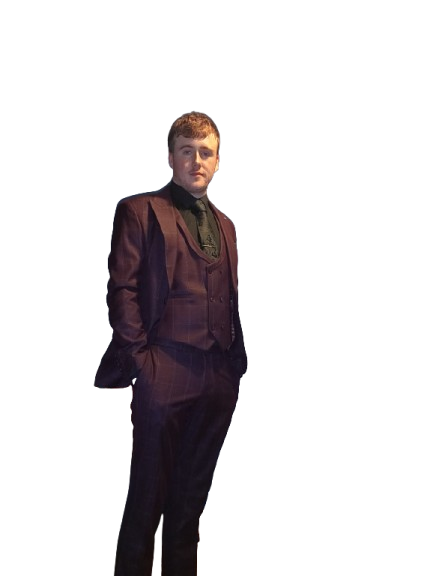

Hi, I'm Michael Casey, a computer science student from Dundalk.
I love music and adventure, which fuel my creativity. I'm motivated,
always keen to learn, and ready to take on new challenges. I enjoy
bringing fresh ideas to life and pushing myself to grow every day.
St Mary's College: 2017-2023
-> 469 points, CompSci SOTY, 3rd best in class
TUD Grangegorman: TU857 CompSci (Infrastructure): Graduate 2027
-> 1.1 in 6/16 modules, avg grade of 1.1 (70%)
Dundalk Stadium | Bartender | 12/2023 - PRESENT
Fortys Bar | Bartender -> Co-Manager | 06/2024 - 09/2024
Spar | Floor Staff | 07/2023 - 09/2023
St Marys College | Examinations Assistant | 06/2022 - 06/2022
Excellent with Python & C. Decent grasp of HTML & CSS and Java
Knowledge of Networking on cisco devices. Use of hardware such
as Nucleo Microprossers & PCs. Other skills include, Communication,
Teamwork & Leadership and Working in high pressure environments